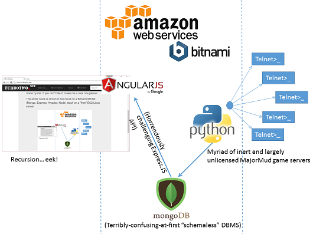

<div class="page-header vertical-center">

    <div class="container">

        <h1>About</h1>
        <p>TurboTwo is a purely academic, 'internet heritage' pursuit which provides extended functionality to
         the ages old text-based MMORPG game <a href="http://www.mudcentral.com" target="_blank">MajorMud</a> by automating
        and centralizing cross-server information such as game server status, top lists, and other playing metrics.</p>
        <p>TurboTwo.net came about as a university computer science project, but was a long time in the making.
        Several years ago, the site TurboSentry.net went down after the long time Sysop of the
        EntConn BBS passed away [<a href="http://turbosentry.org/" target="_blank">it is back up</a> now thanks to Turbofoot!].

        <p>TurboTwo.net is written in <b>AngularJS</b> for the front end,
        <b>Python</b> for the Telnet crawling service which stores the Top100 list
        data from each board in <b>JSON</b> format on a <b>mongodb</b>.
        The logo is poorly made by me.  If you don't like it,
        make me a new one please.</p>
        <p>The entire stack is stored in the cloud on a <b>Bitnami MEAN</b> <i>(Mongo, Express, Angular, Node)</i>
        stack on a "free" EC2 virtual Linux server running on Amazon Web Services.</p>
        <center> 
        <p class="small">I do not have enough good things to say about Python.</p></center>

        <p>I have desires, not necessarily plans though, to eventually make a web-based .dat viewer,
            and what really excites me is the idea of making a 3D WebGL Map explorer which is similar to what
            you would find in MM Explorer but entirely web based using something like the Cesium library or similar.
        I guess the best I can describe my vision for that is the map created by the drones in the movie Prometheus.</p>
        <p>So, thank you for visiting.  If you have any comments or questions please feel free to contact me.
        I feel it important to keep the legacy/heritage elements of the old WWW alive and I hope that since you
        are reading this, you can identify with that cause.</p>
        <p class="lead">-Castor </p>(Hit me up on <a href="https://www.linkedin.com/in/thomas-james-cissp-39045b79" target="_blank">
            <i class="fa fa-linkedin" aria-hidden="false"></i></a>)
                    <hr>
        <p>Special thanks for their academic advisement to <i>Dr. Bhaskar Raj Sinha</i> and <i>Dr. Pradip Dey</i>
            of National University School of Engineering and Computing.</p>
                    <hr>
        <p class="small">MajorMud is Copyright © - 2016  Metropolis Entertainment, Inc.
        <a href="http://turbosentry.org/" target="_blank">Turbosentry</a> is the inspiration for this site
        and is still very much alive and well thanks to the efforts of TurboFoot.  As mentioned in this About section,
        this site and its contents are purely for academic use and will never be the subject of any advertisements,
        donation solicitations, or any other for-profit motives.  If you want to support this site, educate yourself on
        local politics and exercise your right to vote.  Plant a tree.  Help an old woman across the street.</p>
    </div>
</div>